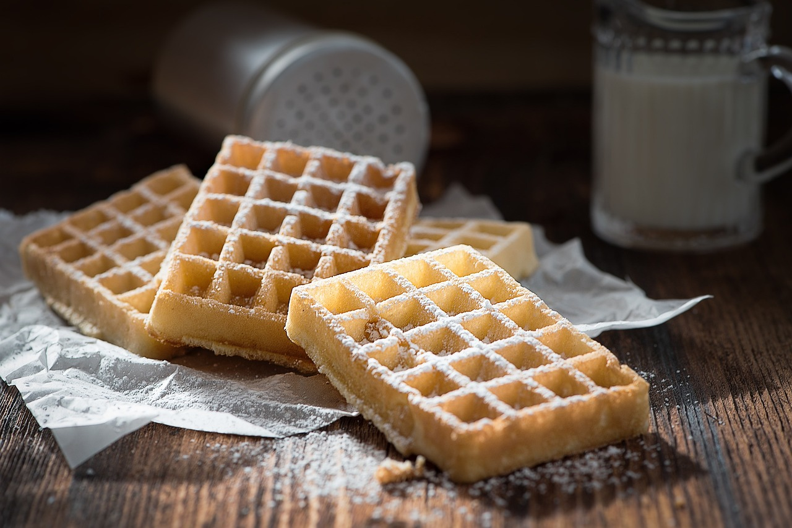

<div onclick="closeDropdown()">

    <div class="main-div">
        <h1>Waffeln à la Kochwelt</h1>
        
        <div class="small-icons-parent">
            <div class="small-icons-child">
                
                <span>15 Min.</span>
            </div>
            <div class="small-icons-child">
                
                <span>einfach</span>
            </div>
            <div class="small-icons-child">
                
                <span>28.10.2022</span>
            </div>
        </div>
        <hr>
        <div class="inputDiv">
            <span>Zutaten für</span>
            <input onkeyup="resetInput()" type="number" id="myInput" placeholder="Mind. 1 Portion" value="6" min="1">
            <button onclick="calculate()">Portionen</button>
        </div>

        <table>
            <tbody id="table"></tbody>
        </table>

        <h2>Zubereitung</h2>
        <div class="small-icons-parent">
            <div class="small-icons-child">
                
                <span>ca. 15 Minuten</span>
            </div>
            <div class="small-icons-child small-icons-child-extra">
                
                <span>Gesamtzeit ca. 30 Minuten</span>
            </div>
        </div>
        <ul>
            <li>Butter mit Zucker und Vanillezucker verrühren.</li><br>
            <li>Eier nach und nach unterrühren.</li><br>
            <li>Mehl, Backpulver und Salzmiteinander vermischen und zum Teig rühren.</li><br>
            <li>Jetzt die Milch langsam unterrühren.</li><br>
            <li>Waffeleisen vorheizen undje 2 gehäufte Esslöffel Teig auf das Waffeleisen geben.</li><br>
            <li>Jede Waffel etwa 1-2 Minuten goldbraun backen.</li><br>
            <li>Mitfrischem Obst oder Sahne genießen</li><br>
        </ul>

        <h3>Rezept erstellt von: </h3>
        <div class="author">
             <b> Robert Aliaj</b>
        </div>
    </div>
</div>